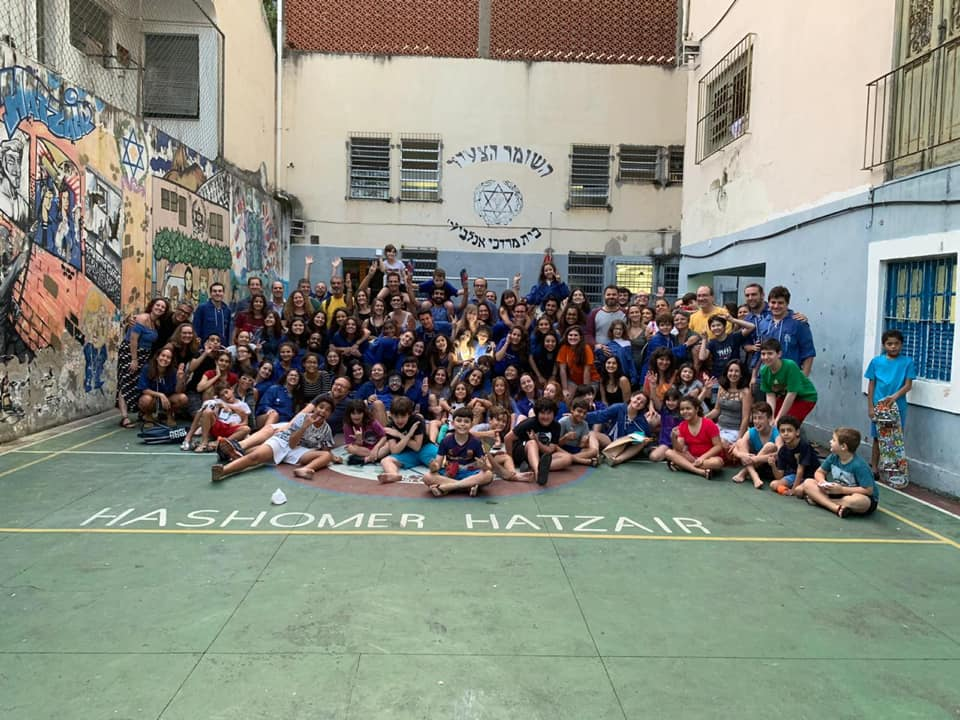

Beit

O Beit Mordechai Anilevitch, uma casa situada a Rua das Palmeiras, foi adquirida pelo Organização Sionista Unificada do Rio de Janeiro, em nome do Hashomer Hatzair em 1961, época em que a comunidade judaica começou a migrar do subúrbio e zona norte para a zona sul da cidade do Rio de Janeiro.
As atividades acontecem semanalmente aos sábados de 14h às 18h30, com exceção em feriados judaicos e feriados nacionais. Além das atividades promovem diversos eventos para a comunidade shomrica e para a peilut (ativistas), em pessach organizam um seder de pessach comunitário, também acontecem sedarim de rosh hashana, shabatot temáticos e eventos para a kehila de pais como falafadas.